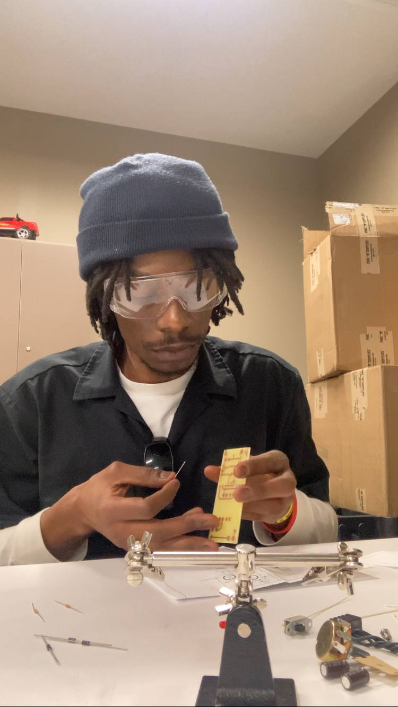
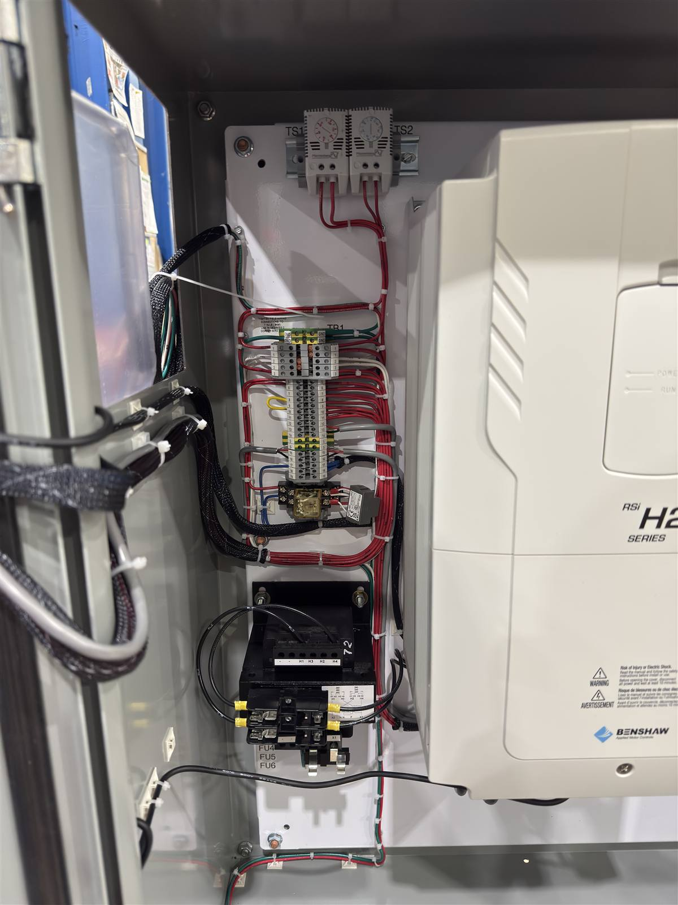
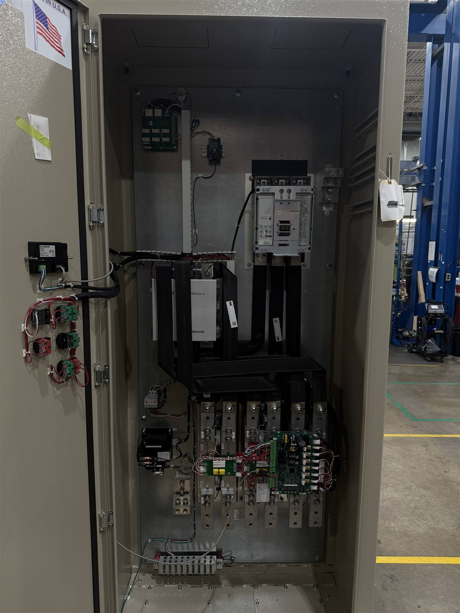
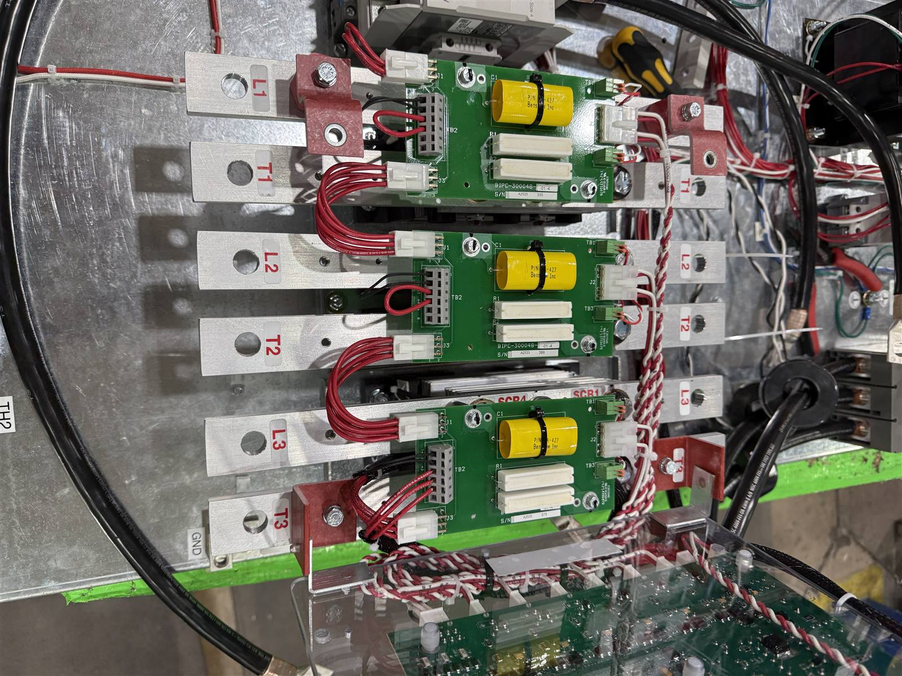
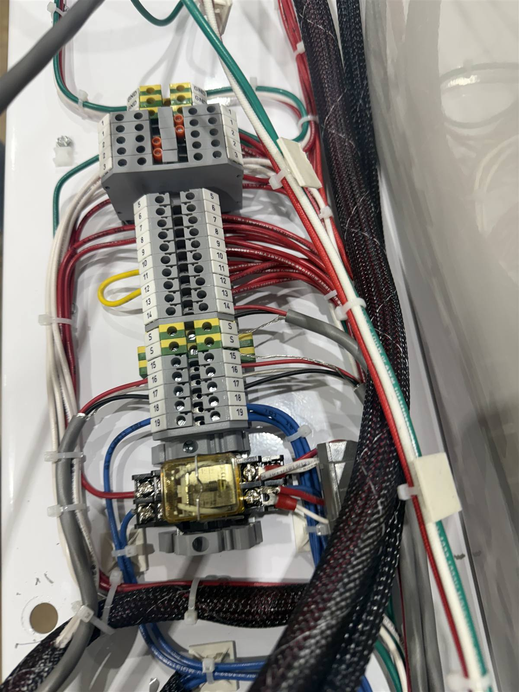
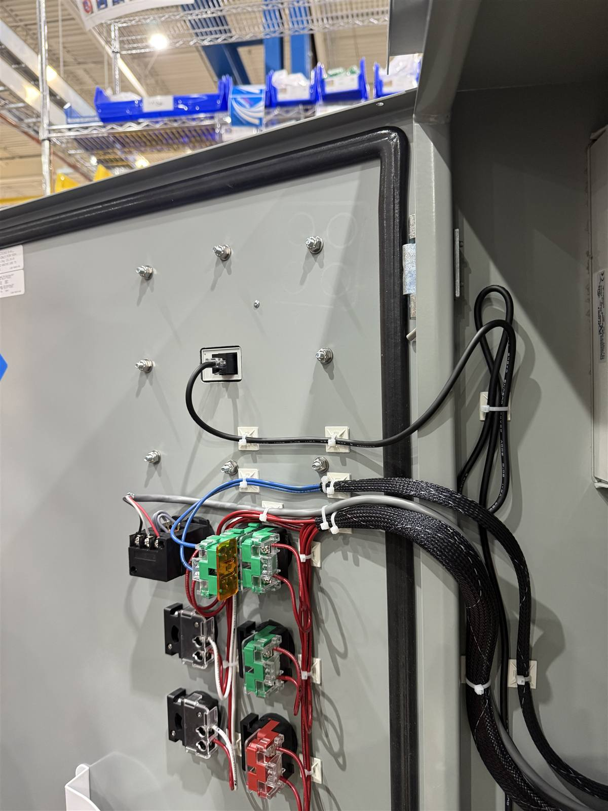
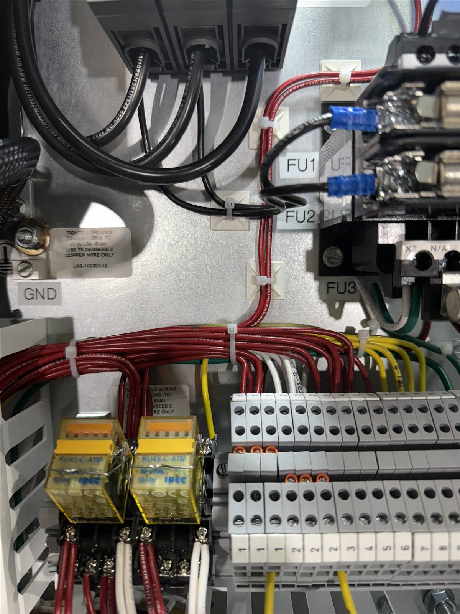
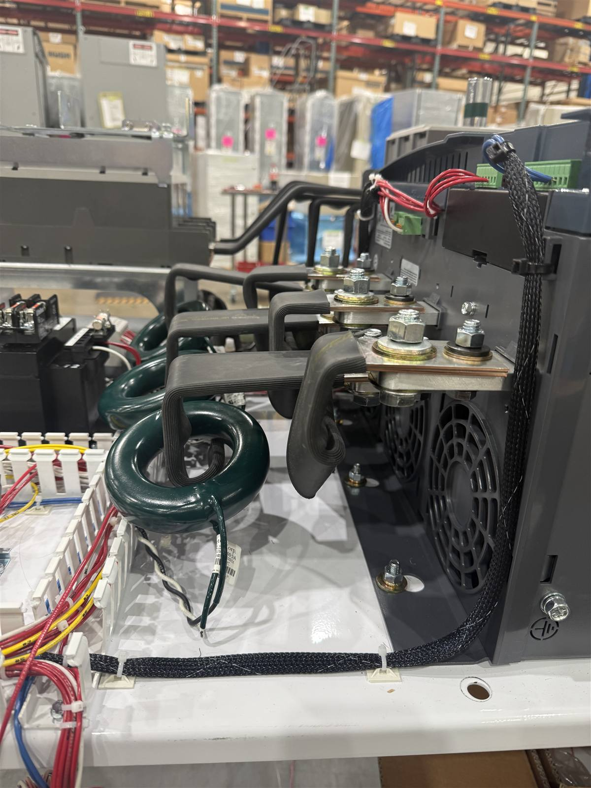
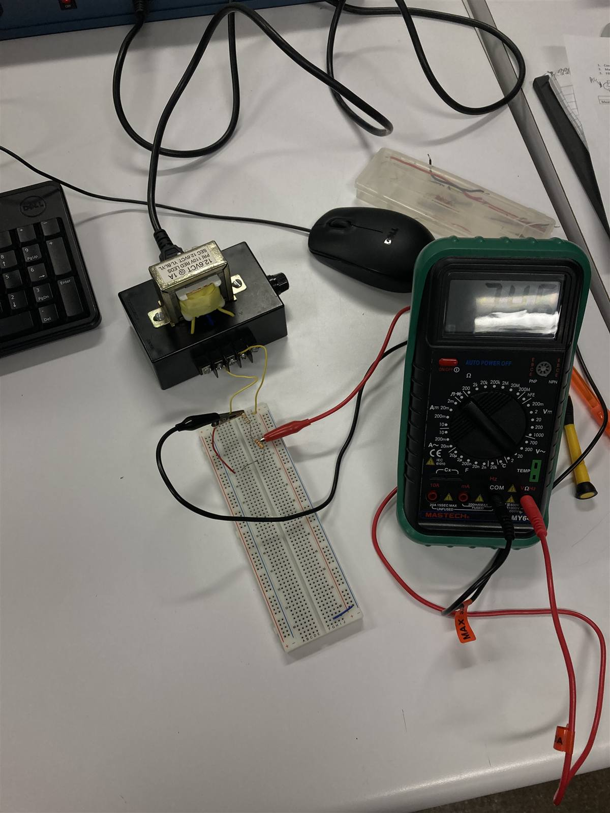

Ingénieur Avant Tout
Jonathan Sumaili a étudié le Génie Informatique et le Génie Électronique à Penn West University, acquérant une base solide couvrant les systèmes embarqués, l'électronique de puissance et le contrôle industriel.
En tant qu'ingénieur électromécanicien spécialisé en contrôle moteur, il a assemblé, câblé et testé des systèmes de contrôle industriels — variateurs de fréquence (VFD), démarreurs progressifs, étages de puissance SCR et panneaux de commande complets — pour des applications industrielles exigeantes.
Aujourd'hui, en tant qu'ingénieur technico-commercial dans l'industrie métallurgique, il allie rigueur d'ingénierie et stratégie commerciale — la même combinaison qui anime la mission de SUJO en RDC : fournir des solutions industrielles fiables et bien spécifiées aux entreprises congolaises de construction, des mines et d'infrastructure.
Parcours Professionnel
Ingénieur Technico-Commercial
Conseille les clients industriels sur la sélection d'équipements et les spécifications techniques, traduisant des exigences d'ingénierie complexes en solutions pratiques et rentables.
Ingénieur Électromécanicien
Assemblage, câblage et test de systèmes de contrôle moteur industriels : variateurs de fréquence (VFD), démarreurs progressifs, ensembles de puissance SCR et panneaux de commande sur mesure.
Génie Informatique & Électronique
Double formation d'ingénieur couvrant les systèmes embarqués, la conception de circuits, l'électronique de puissance et le logiciel — l'ossature analytique de la méthode de conseil SUJO.
Dans l'Atelier
Un aperçu du travail de contrôle moteur industriel derrière l'expérience : panneaux de variateurs, démarreurs progressifs, câblage de puissance et ensembles de commande.








Mettez Cette Expérience au Service de Votre Projet
Des systèmes de contrôle moteur aux études de projet complètes, SUJO apporte une ingénierie éprouvée sur le terrain en RDC.
Demander un devis